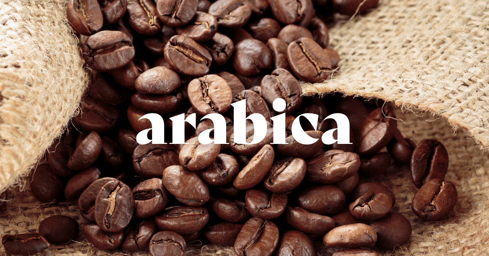
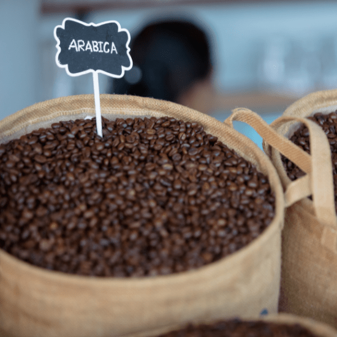
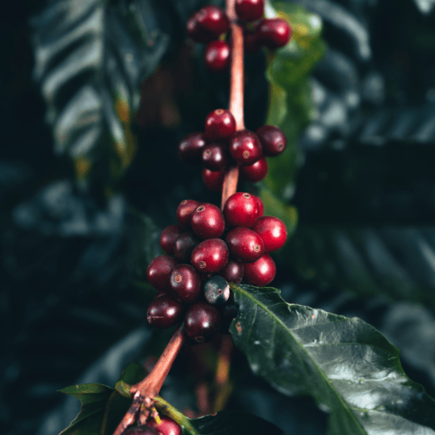

Historia y Evolución
El café Arábica ha tenido un papel protagónico en la historia del café en México. Su modernización se dio en diferentes etapas que marcaron la producción, comercialización y consumo del café.
Datos Relevantes
| Período | Evento | Impacto |
|---|---|---|
| Siglo XIX | Introducción del café arábica | Expansión del cultivo en Veracruz |
| 1930s | Mejoras en técnicas de cultivo | Mayor rendimiento y calidad |
| Actualidad | Certificaciones y sostenibilidad | Comercio justo y producción orgánica |
Imágenes Destacadas



Conclusión
La modernización del café Arábica no solo mejoró la producción y calidad, sino que también impulsó el respeto por las prácticas sostenibles y la conservación del medio ambiente, consolidándose como un símbolo de cultura y tradición.
Para conocer más sobre el café arábica, visita estos recursos:
Historia del Café Arábica Producción en México Innovaciones Tecnológicas